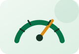
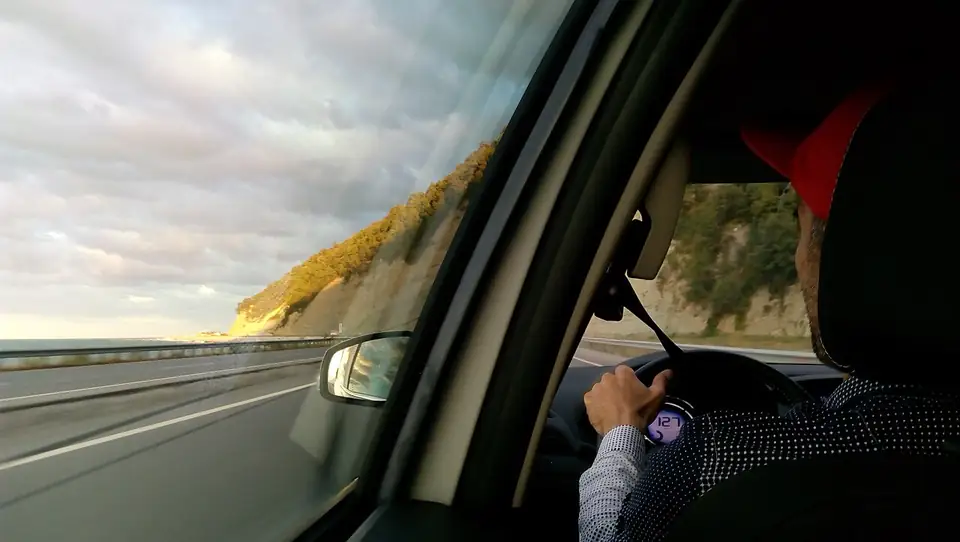
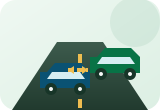
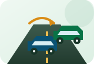
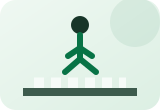

سلوك الطريق
السرعة المناسبة
اتبع الحد المعلن وعدّل سرعتك حسب الرؤية والطقس والازدحام، لا حسب إحساسك فقط.
مراجعة يومية
القواعد لا تُحفظ بمعزل عن الطريق؛ اربط كل قاعدة بموقف واقعي يحافظ على وقتك ومساحتك وهدوئك.

سلوك يحميك
تربط البطاقات بين قاعدة الطريق وصورتها الدلالية حتى تتذكر التصرف الصحيح بصورة أسرع.

اتبع الحد المعلن وعدّل سرعتك حسب الرؤية والطقس والازدحام، لا حسب إحساسك فقط.

اترك أمامك وقتاً ومسافة كافيين للتوقف أو المناورة، وزدهما عندما يصبح الطريق زلقاً.
تأكد من ربط الحزام ووضعية الجلوس والمرايا قبل تحريك المركبة.

ضع الهاتف بعيداً عن يدك واضبط وجهتك قبل الانطلاق حتى يبقى انتباهك للطريق.

شغّل المؤشر، افحص المرايا والنقطة العمياء، ثم انتقل بسلاسة عند توفر المساحة.

خفف السرعة قرب المعابر والمدارس والأسواق، وكن مستعداً دائماً للتوقف.
نظف الزجاج، استخدم الإضاءة المناسبة، ولا تحدق في أضواء المركبات المقابلة.

افحص الإطارات والأضواء والسوائل بانتظام لأن السلامة تبدأ قبل تشغيل المحرك.